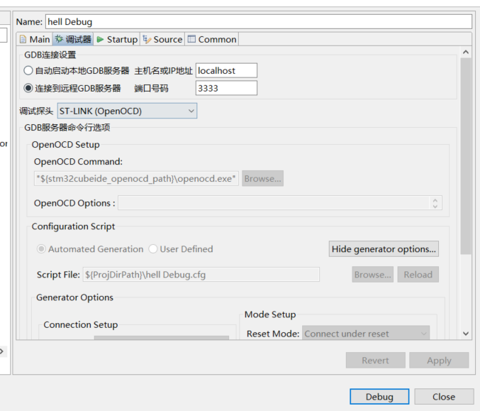

使用STM32CubeIDE通过SWD调试STM32F103
要准备的东西
- STM32CubeIDE
- OpenOCD
- CMSIS-DAP 调试器
- STM32开发板（我用的STM32F103）
步骤
去Cube里开个项目，生成代码时注意要在 Pinout & Configuration / System Core / SYS 中把 Debug 调整成 Serial Wire
运行 openocd -f interface/cmsis-dap.cfg -f target/stm32f1x_stlink.cfg （注意要确保线路接好，且调试器/开发板 都已经上电允许，否则openocd起不来）
OpenOCD是一种开源调试方案，除此之外还支持大量目标平台和调试器，可在 script 目录下查看
回到CubeIDE，在 Run / Debug Configuration… 中添加一个Debug配置，注意GDB端口要和openocd的端口一致

要确保线路接好， 否则出各种诡异问题emmm，如果调试迟迟不能成功，尝试手动复位，应该可看到OpenOCD输出诸如 Info : stm32f1x.cpu: external reset detected 字样